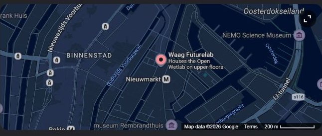

Conversation 419
De Waag Nieuwmarkt Makerspace
Prompt 1 · You
de waag nieuwmarkt makerspace
Response 1 · Google AI Mode
The historic Waag building on the Nieuwmarkt in Amsterdam houses FabLab Amsterdam, the first Fab Lab in Europe.
Waag Futurelab
Key Details
- Location: 1st and 2nd floor, Nieuwmarkt 4, 1012 CR Amsterdam (a short walk from Amsterdam Centraal or Nieuwmarkt metro station). Waag Futurelab +1
- What it is: A digital fabrication makerspace and open-source workshop where artists, designers, students, and makers experiment with digital tools, rapid prototyping, and peer-to-peer learning. Fablab Amsterdam +1
- Equipment & Tools: Includes laser cutters, vinyl/sign cutters, high-resolution NC milling machines, large wood routers, and microcontrollers. Fablab Amsterdam
- Hours: Typically open Thursdays (e.g., 10:00 AM – 5:00 PM), though schedules can vary. Google
- Programs: It acts as a hub for the global Fab Lab network and hosts educational initiatives like the Fab Academy. Waag also helped pioneer neighborhood maker spaces across the city via Amsterdam Maakplaats 021 in collaboration with the public libraries (OBA). Waag Futurelab +2
If you want to visit or use the equipment, let me know:
- Are you looking for open lab hours or a specific workshop/course?
- What kind of machine or project (3D printing, laser cutting, woodworking) are you working on?
Source links preserved from this response
- Waag Futurelab
https://waag.org/en/project/fablab-amsterdam/ - Fablab Amsterdam
https://fablab.waag.org/ - Amsterdam Maakplaats 021
https://waag.org/en/project/amsterdam-maakplaats-021/ - Waag Futurelab
https://waag.org/en/article/waag-democratising-technology-citizens/
Prompt 2 · You
wetlab
Response 2 · Google AI Mode
The Open Wetlab is a unique biotechnology, bio-art, and design laboratory operated by Waag Futurelab inside the historic Waag building at the Nieuwmarkt. It serves as a community biolab created to democratize and demystify the life sciences.
Waag Futurelab +1

What They Do
The space acts as a collaborative hub for artists, designers, citizen scientists, and "DIY biologists" to experiment with living biological matter, open hardware, and alternative materials.
Waag Futurelab +1
- Bio-Materials & Art: Researching eco-friendly practices, such as creating organic inks, growing textiles, or developing alternative bioplastics. Waag Futurelab +1
- Textile Innovation: Collaborating closely with the on-site TextileLab to experiment with dyeing fabrics naturally using bacteria instead of hazardous chemicals. Waag Futurelab
- The BioHack Academy: An international flagship program hosted by the lab where participants learn to build their own open-source lab equipment (like centrifuges and incubators) and grow their own biomaterials. Waag Futurelab
Laboratory Equipment & Access Rules
Because it operates as a community space inside a public-facing monumental building, strict safety rules apply:
Waag Futurelab
- The Setup: The lab is equipped with sterile hoods, microscopes, centrifuges, spectroscopes, PCR machines, and electrophoresis gear. Waag Futurelab
- Safety & Constraints: Only non-pathogenic organisms are permitted. You cannot work with recombinant DNA, hazardous/pathogenic chemicals, or culture human tissues here. All waste is rigorously sterilized or chemically treated. Waag Futurelab
- How to Join: Independent work requires a formal project proposal, biosafety training, and a commitment to keeping your web documentation open-source. Waag Futurelab
Public Events & Visiting
If you don't have a structured research project, you can get hands-on experience through public workshops. The lab regularly opens up for the "Waag Open" series (usually held on the first Thursday evening of the month), which features beginner-friendly bio-design sessions and ethical discussions.
Waag Futurelab +2
Are you hoping to attend a public bio-design workshop, or do you have a specific DIY biology project proposal you are looking to research and test in the lab?
Source links preserved from this response
- Waag Futurelab
https://waag.org/en/lab/open-wetlab/ - Waag Futurelab
https://waag.org/en/article/first-dutch-open-wetlab-opened/ - Terms
https://www.google.com/intl/en-NL/help/terms_maps/ - waag.org
http://waag.org/ - Waag Futurelab
https://waag.org/en/event/opening-open-wetlab/ - Waag Futurelab
https://waag.org/nl/article/waag-futurelab-start-vanaf-mei-2025-als-zoop/ - Waag Futurelab
https://waag.org/nl/project/waag-open/ - Waag Futurelab
https://waag.org/en/open-wetlab-faq/ - Waag Futurelab
https://waag.org/en/project/waag-open/